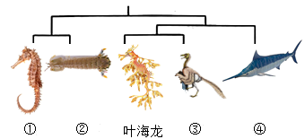

2023年北京中考生物 第22题 解析
22. 叶海龙是一种海洋动物，以漂浮的海藻和游近的小虾为食。它全身覆盖的叶状附肢并非用来游泳，而是使自身完美地融入周围的大型海藻中、下图中①~④代表的生物与其存在或远或近的亲缘关系。下列关于叶海龙的叙述，错误的是（ ）

A. 属于海洋生态系统中的消费者B. 叶状附肢有利于隐藏自身
C. 其形态结构是自然选择的结果D. 图中与其亲缘关系最远的是④
【答案】D
【解析】
【分析】1．自然界中的生物，通过激烈的生存斗争，适应者生存下来，不适应者被淘汰，这就是自然选择。自然选择的主要内容是：过度繁殖、生存斗争、遗传和变异、适者生存。
2．研究表明，叶海龙的形态结构与其生存环境密切相关，能够提供有效的伪装和保护。这种形态结构的进化是通过基因的遗传和变异，并通过自然选择的过程逐渐发展和优化的。
【详解】A．消费者是指直接或间接利用生产者所制造的有机物质为食物和能量来源的生物，主要指动物。叶海龙是一种海洋动物，以漂浮的海藻和游近的小虾为食，属于海洋生态系统中的消费者，A正确。
B．叶海龙全身覆盖的叶状附肢并非用来游泳，而是使自身完美地融入周围的大型海藻中。可见，叶状附肢有利于隐藏自身，B正确。
C．那些具有有利变异（即具有更好的伪装能力）的叶海龙个体，能够完美地融入周围的大型海藻中，更容易在生存斗争中获胜并生存下来。而那些形态结构不适应环境的个体，则容易被捕食者发现或无法有效捕食，从而被淘汰。因此，叶海龙的形态结构是经过自然选择的结果，C正确。
D．结合题图可知，图中与其亲缘关系最远的是①或②，不是④，D错误。
故选D。